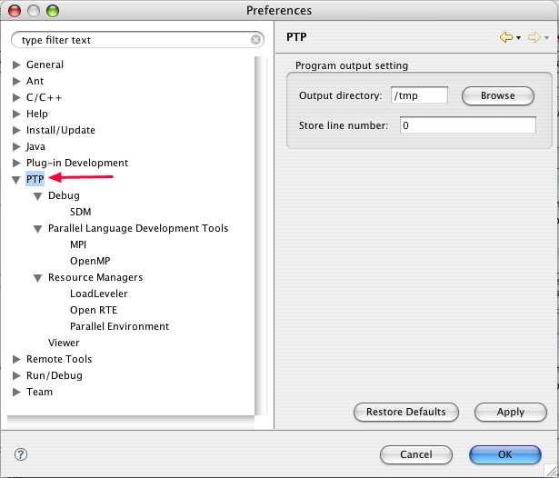
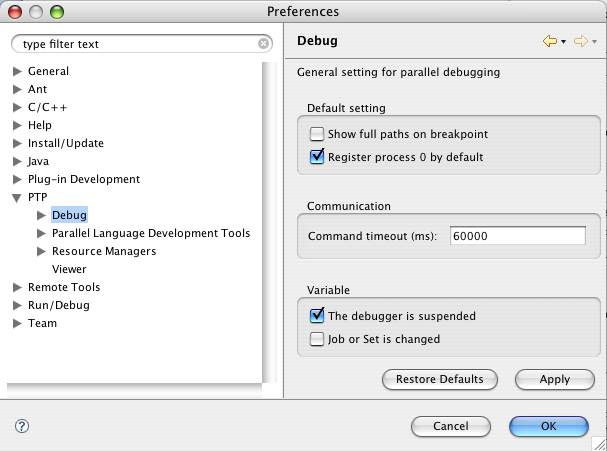
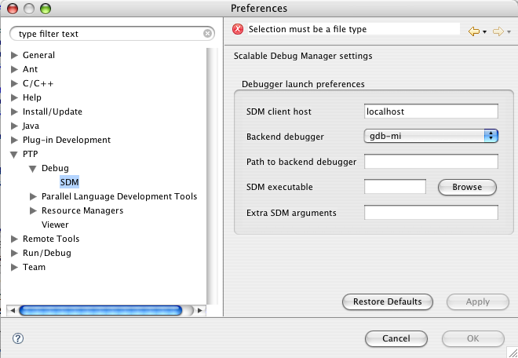
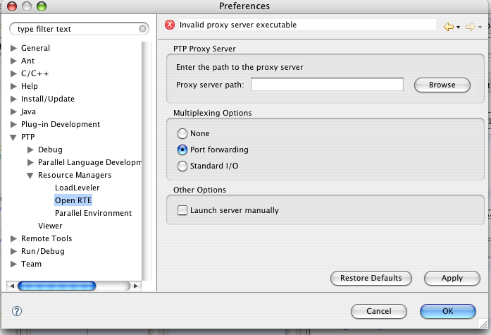
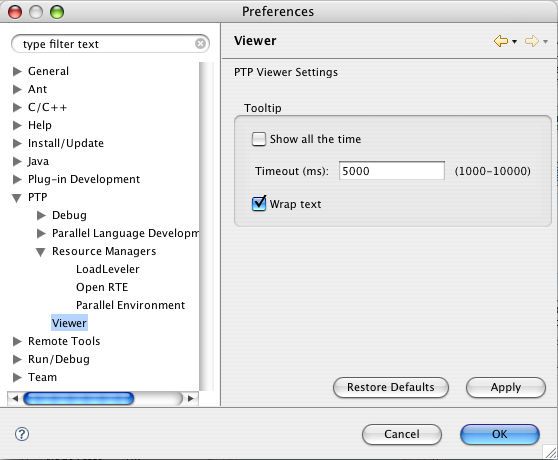

PTP Preferences
To open the Preferences window, select Window > Preferences...
(On a Mac, select Eclipse > Preferences.)
Then select 'PTP' in the list of preferences pages on the left side.
In the figure below, all the PTP preferences are expanded to show all the parts.

PTP Preference Page
This is the main preferences page for PTP.
These preferences are used primarily to ...
Debug Preferences Page (PTP>Debug)
This is the main parallel debugger preferences page. These are preferences that apply to any parallel debugger.

- Default setting: These preferences control some debugger default behavior
- Show full paths on breakpoint (default disabled): Use the full path to the source
file when displayed in the debugger Breakpoint View.
- Register process 0 by default (default enabled): Will register process 0 with the
Debug View when the parallel debugger starts. This is required to enable Eclipse to switch automatically to the PTP Debug perspective when a debugger breakpoint is hit.
- Communication: These are preferences relating to the communication between Eclipse and the external parallel debugger. They do not normally need to be changed.
- Command timeout (default 60000): this specifices the period Eclipse waits after sending a command to the external debugger. If no response is received the debug session will be terminated.
- Update variables when debugger is suspended (default enabled): the debugger allows variable values to be displayed in tooltip popups when the mouse hovers over a process in the Parallel Debug view. Enabling this option will update all the values each time the process is suspended. When this option is disabled, the value will be updated when the tooltip popup is displayed.
SDM (Scalable Debug Manager) Preferences (PTP > Debug > SDM)
These are
preferences for controlling the behavior of the SDM.

- Debugger launch preferences: These preference control how the debugger behaves when it is launched.
They do not normally need to be altered.
- SDM client host (default localhost): This specifies the host on which Eclipse is running. It is used to establish communication between the SDM and Eclipse. In situations where a parallel job is being debugged remotely, this should be the host name of the "front end" on which Eclipse is running.
- Backend debugger (default gdb-mi): The name of the backend debugger to use when debugging the application. This is an internal name known by the SDM, not the name of the debugger itself. Currently only gdb using the MI mode is supported.
- Path to backend debugger (default empty): This can be used to specify the path to the backend debugger, if it is located in a non standard place. Useful on machines that do not have physical disks or network filesystems on compute nodes.
- SDM executable (default sdm location): The path to the SDM executable. This is normally installed in an Eclipse plugin and is automatically determined.
- Extra SDM arguments -
Parallel Language Development Tool (PLDT) Preferences
See the help for PLDT
Resource Manager Preferences (PTP > Resource Managers )
See the help for Loadleveler
and Parallel Environment
for details on their preference pages.
Open RTE Preferences (PTP > Resource Managers > Open RTE)
These are preferences specific to the Open Runtime Environment (Open RTE).

- Open Runtime Environment PTP Proxy Server: Specifies the location
of the Open RTE proxy server executable. This is used to interface to Open RTE
for remote job launch and monitoring of system and job status.
This is automatically determined and does not normally need to be changed.
- Multiplexing Options:
- None
- Port forwarding
- Standard I/O
- Launch ORTE server manually (default disabled):
Overrides the automatic startup of the Open RTE proxy server. This is mainly used for testing and should not be changed.
Viewer Preferences (PTP > Viewer)
These preferences are used to change the behavior of some of the PTP views. They do not normally need to be altered.

- Tooltip - Show all the time:
- Tooltip timeout (default 5000): Changes the time the tooltip remains displayed when the mouse hovers over a node or process icon.
- Wrap text -
Back to Top | Back to Table of Contents